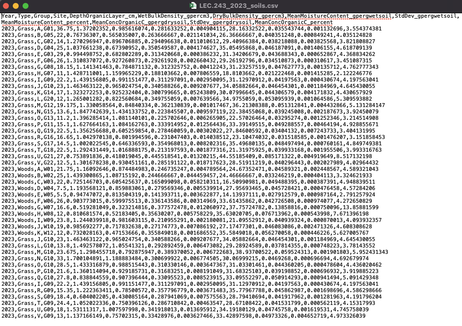

6 Introduction
6.1 The LEC R server
The LEC R server is now up and running! This means we’ll no longer have to use AppsAnywhere.
The LEC R server can be found at https://lec-rstudio.lancaster.ac.uk (the link is also on Moodle). You will log in with your normal Lancaster University username and password.
There are two main benefits to using the R server.
It is accessed through a browser window, and as long as you are on Lancaster University internet, you will not need to download any software and it will work the same way on any device.
The file storage is more reliable than on the AppsAnywhere version of R.
6.2 Connecting to the R Server off campus
If you are off campus (and therefore not using Lancaster University internet), you will need to use the Global Protect VPN, which allows you to access some services and IT as if you were physically located on campus.
There are instructions for how to set up the VPN on your personal computer at: https://portal.lancaster.ac.uk/ask/vpn/.
Tip: If you are not comfortable using the VPN, I recommend doing your R coursework on campus - either on a university computer (in the library or a computer lab) or on your personal laptop in a study space like the library or the LEC atrium.
6.3 Organising your files
If you haven’t done so yet, open the LEC R Server in a browser and log in.
You should use a standard set of folders keep your files organised on the server. (Getting into this habit makes it easier to share your work with others or keep it synced across multiple devices.)
Use the “Create a new folder” icon (a yellow folder with a plus sign inside of a green circle on the top left of the Files pane) to create three new folders:
- code
- data
- results
Warning! It’s very important that you name the folders exactly as described above - including the use of capital vs lowercase letters - otherwise the example code will not work for you.
Click on File > New File > R Script to create a new R script.
Save the R script in the Code folder with the name Week2Practical (or something similar).
6.4 Uploading files to the R Server
You will need to upload any data files that you want to analyse to the R server.
Download this week’s data set (palmer_penguin_data.csv) from the Statistical Analysis Components section on the LECX5141 Moodle page.
This is a well-known dataset containing morphological data collected from penguins near Palmer Station in Antarctica in 2007-2009. The project was led by Dr Kristen Gorman, a marine biologist at the University of Alaska Fairbanks.
Upload the data file to the R server and save it to your Data folder.
- The upload button is in the
Filespane in the bottom-right pane. It it near the the middle of the tool bar at the top and has a golden circle with a white arrow pointing up.
You should also upload your R script from week 1 and save it to the Code folder, so that all of your work from the module will be saved in one location.
6.5 Loading packages
Last week (when we were using AppsAnywhere to access R) we installed and loaded two packages - tidyverse and psych.
I mentioned that the tidyverse package is actually a collection of many other packages.
From now on we’ll load each of the tidyverse packages that we want to use separately, since that’s how they are installed on the LEC R server.
Add a header and the code to load the following packages to your blank week 2 script, as shown below:
##### Your Name
##### LECX5141 - Week 2 Practical
##### 16 Oct 2026
library(dplyr)
library(tidyr)
library(ggplot2)
library(psych)Run the code to load the libraries.
6.6 Data file formats
Last week we used the built-in iris dataset for convenience, but this week we’ll learn how to read our own data into R.
Many datasets are stored as Excel files. Excel files can contain lots of complex information besides text, like pretty formatting (coloured cells, bolded text, etc.), formulas with cell references, and graphs.
However, R can’t read Excel files directly, and it doesn’t like all those extra bells and whistles.
R needs the data as a comma separated value, or .csv file, that only contains information as text (i.e. numbers, letters, and certain types of punctuation).
Any Excel file can be saved as a .csv file using the ‘Save As’ menu option.
You’ll practice doing it yourself in a later practical, but for today’s exercise, the data is already in the correct format.
Unsurprisingly based on the name, a .csv file has values separated by commas. You can open one in a text editor and it will look something like this:

Yuck. Pretty difficult for a human to work with, but it’s perfect for R.
6.7 Reading in data
Next you will read the data into R using the read.csv() function, and store it (using the arrow operator) as an object called pengdata.
Important! R needs to know where to look for the data file.
The best way to tell R where to look is by using something called “relative file path”. Instead of looking for an exact location (that might vary between different computers, e.g. if you share your code with someone else), it looks relative to R’s current location, also known as the “working directory”.
In the file path below:
- the
.means R will start in the working directory (for the R server, this is the top level of your server account) - then it will look inside the
datafolder - then it will look for a file named
palmer_penguin_data.csv
Type the code below into your script file and run it.
pengdata <- read.csv("./data/palmer_penguin_data.csv")You should see the data frame in your Environment tab now.
Take a couple minutes to examine it and determine:
- How many rows and columns are there?
- What do each of the columns mean?
- What type of data does each column contain?
Today you are going to focus on body mass and try to answer the following questions about the Palmer Penguin dataset:
Research questions:
Does body mass look Normally distributed?
How much does the body size differ:
- between different species?
- between different sexes?